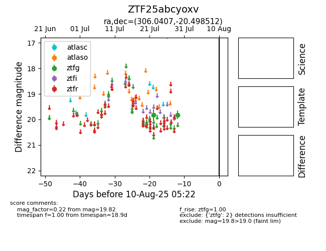

Target ZTF25abcyoxv at 2025-08-10 05:22, see:
FINK: fink-portal.org/ZTF25abcyoxv
Lasair: lasair-ztf.lsst.ac.uk/objects/ZTF25abcyoxv
ALeRCE: alerce.online/object/ZTF25abcyoxv
alt names
ZTF25abcyoxv (ztf,fink)
coordinates:
equatorial (ra, dec) = (306.0407,-20.49851)
galactic (l, b) = (23.4683,-29.19812)
photometry
last ztfg=19.82
2 ztfg detections
